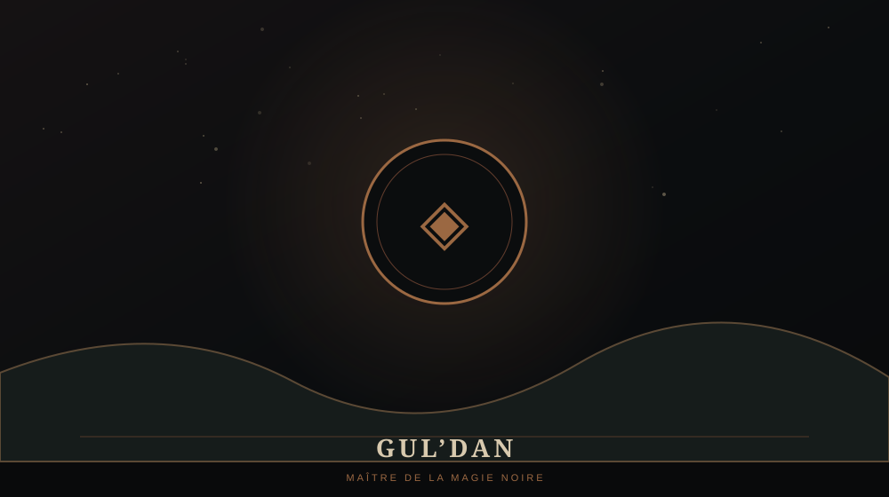

GUL'DAN

💀 QUI EST GUL'DAN ?
Gul'dan est un puissant démoniste orc et l'une des figures les plus influentes derrière la Horde. Là où Blackhand représente son autorité militaire visible, Gul'dan agit davantage dans l'ombre.
Sa recherche de pouvoir et sa maîtrise des arts sombres ont des conséquences immenses pour les Orcs comme pour Azeroth.
🕯️ LE SHADOW COUNCIL
Gul'dan dirige le Shadow Council, un cercle secret qui exerce une influence considérable sur la Horde. Warcraft I n'expose pas encore toute la complexité de cette organisation, mais elle deviendra essentielle pour comprendre les événements.
🚪 LIEN AVEC AZEROTH
Gul'dan est directement associé à l'ouverture de la voie entre Draenor et Azeroth avec Medivh. Il est donc l'un des personnages fondamentaux derrière le déclenchement de la Première Guerre.
⚠️ LORE ULTÉRIEUR / SPOILERS
Son obsession pour le pouvoir continuera pendant Warcraft II et aura des conséquences catastrophiques pour la Horde. Son héritage reviendra encore bien plus tard dans l'histoire de Warcraft.
Gul'dan est l'un des personnages issus des tout premiers Warcraft dont l'influence traverse le plus grand nombre d'époques de la franchise.